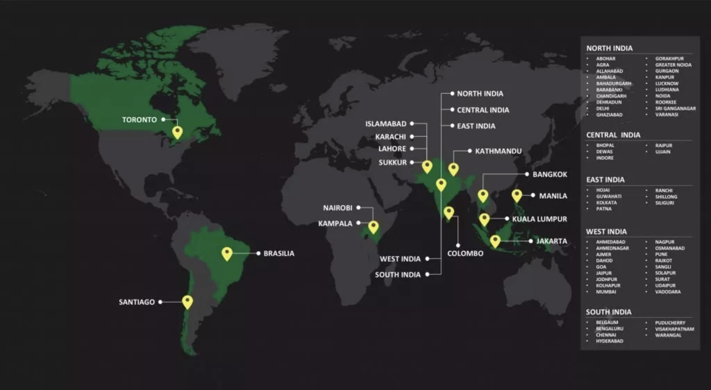

<div class="section home">
        <div class="container">
    
            <div class="row">
                <div class="col-lg-6 col-md-6">
                    <h2>ABOUT US</h2>
                    <h4 style="color: rgb(204, 109, 19)">Who we are ?</h4>
                    <p>The Robin Hood Army is a volunteer based, zero-funds organization that works to get surplus food from restaurants and the community to serve less fortunate people.</p>
                    <p>Our local chapters are run by friends and colleagues, who hope to create a difference in their own unique way. For example, restaurants in the neighbourhood Green Park, will contribute to the homeless of the locality, through volunteers who live in Greek Park. Our “Robins” are largely students and young working professionals – everyone does this in their free time. The lesser fortunate sections of society we serve include homeless families, orphanages, patients from public hospitals, and old age homes.
                    </p> 
                    <h4 style="color: rgb(204, 109, 19)">Our Vision</h4>
                    <p class="personal-phrase"><i class="fa fa-quote-left"></i>Simple really, beat global hunger and bring out the best of humanity using food as a medium.
    
                        The idea is to create self-sustained chapters across the world who will look after their local community. And in the process, inspire people around us to give back to this who need it most.<i class="fa fa-quote-right"></i>
                    </p>
                    <br>
                    <h4 style="color: rgb(204, 109, 19)">What We've Been Up To</h4>
                    
                </div>
            </div>
        </div>
    </div>